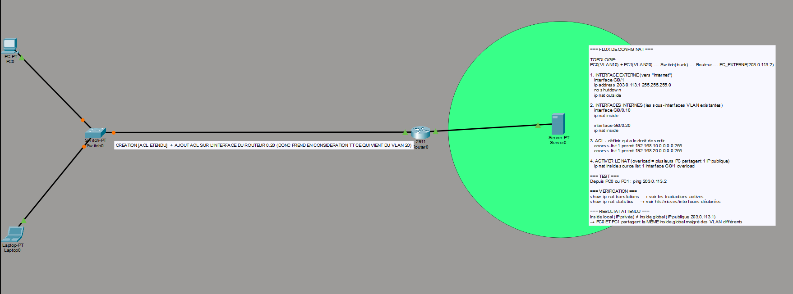

Projet de stage
⚡ Supervision à distance de groupes électrogènes
Système de supervision d’équipements industriels, avec remontée de télémétrie vers une plateforme IoT.
Projet réseau
🔀 NAT avec ACL entre deux VLAN

Deux VLAN (10 et 20) reliés par un trunk à un routeur 2911, qui traduit leurs adresses privées en une adresse publique pour joindre un serveur externe. Une ACL étendue filtre le trafic du VLAN 20.
Résultat : PC0 et PC1 partagent la même adresse publique (203.0.113.1), vérifiée avec show ip nat translations.
Projet réseau
🔌 Routage inter-VLAN

Deux PC dans deux VLAN différents, un switch et un routeur. Le câble switch–routeur est divisé en deux sous-interfaces virtuelles (encapsulation) : chaque paquet est traité par l’interface de son VLAN.
Le routeur vérifie la destination du paquet et le dirige vers la bonne interface, ce qui permet aux deux VLAN de communiquer.